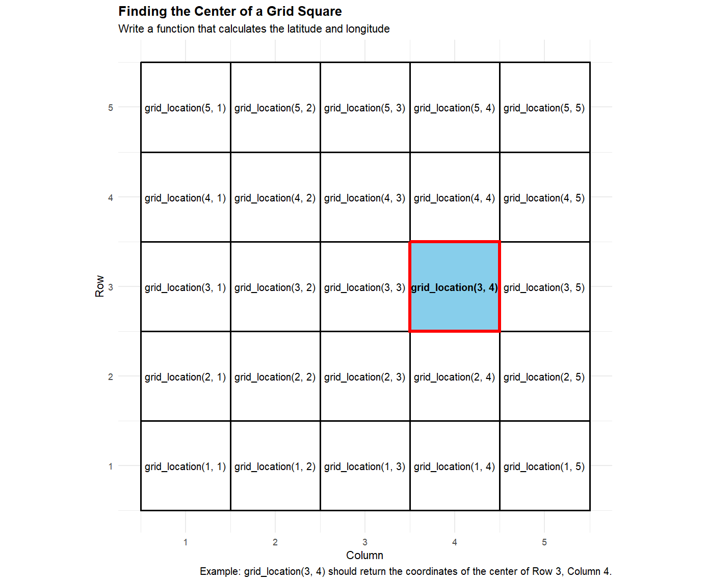

Lecture 8
2026-09-10
– Did you engage with the prepare material (none for today)?
– No quiz this week!
– Homework-1: assigned Friday (11-4); due Friday (11-11) on Gradescope!
> Please see the Moodle announcement if you haven't yet– Proficiency test II (11-22)
– I sent you a GitHub organization invite. Go to github.com and accept it (right hand corner)
– I’m sure lab was hectic! Can you clone a repo?
> If yes, let me know on the GitHub excel sheet
> If no, please see announcements / plan to visit office hours / set up an appointment
> Nick: Fri 9:00 - 10:00am
> Dr. Meyer: M 2:00 - 3:00pm
> My goal for you is to be ready to roll for class Tuesday on how to use GitHub
Practice makes permanent
Let’s practice the steps to clone a GitHub repo!
Rainbow parentheses!
– Navigate to the Tools menu at the top of RStudio.
– Click on Global Options.
– Select the Code tab on the left sidebar, and then click the Display tab at the top.
– Look near the bottom and check the box for Rainbow Parentheses.
I want to very briefly introduce the world of LaTex and writing out math equations in quarto, so you can connect these skills to what you are learning in ST120 (and other courses).
LaTeX is like a programming language that helps you embed math text into a professional document.
Click here for a list of symbols that we can write in a .qmd file using LaTex.
Last class, we talked about writing our own function.
What goes in the following ___ when writing your own function?
Task: Write a function called pick_homework() that uses sample() to randomly select n homework assignment(s) from the homework vector.
Hint: use the sample() function. Check out the help file!
And I asked you… did we really need to write this?
Creating pick_homework() doesn’t give you a meaningful practical advantage here.
… in fact, we actually lose some functionality if we are not carful…
Suppose now you want to calculate your final grade at the end of the semester. Your grade was made up the following way:
final - 50%
midterm - 30%
homework -20%
Write this custom function + practice explaining why it might be useful to write a function for this situation.
“if the inputs change, but the process remains the same”
If you find yourself pasting the same code more than once
If you have something unique you need to solve, repeatedly (ex. reading in data sets a specific way)
If a custom function makes your code easier to read or maintain.
Use an existing R function when it solves the problem. Write your own function when you need to create a reusable process that isn’t already available as a simple function.
You are working with a map divided into a square grid. Each square is identified by its row and column.
The grid has the following coordinate system:
The bottom-left corner of the grid is at latitude \(35.00^\circ\) and longitude \(-78.00^\circ\).
Each grid square is 0.01° of latitude tall and 0.01° of longitude wide.
Moving up one row increases latitude by \(0.01^\circ\).
Moving right one column increases longitude by \(0.01^\circ\).
I want a function that will allow me to pick a row and column, and git the latitude and longitude of the center of the square!

For example, the center of the square in row 3, column 4 would be:
\[ \text{Latitude}=35.00+(3-0.5)(0.01) \] \[ Longitude=−78.00+(4−0.5)(0.01) \]
grid_location(3, 4)
Latitude: 35.025
Longitude: -77.965
Without a function, you’d have to repeatedly write the latitude and longitude calculations. With a function, you can simply provide the row and column, and R does the calculations for you.
Write the grid_location function below, and verify you are correct by checking grid_location(3, 4) with the previous slide
We’ll use the built-in iris dataset. The Petal.Length column contains the petal length for each flower.
Goal: Look at each petal length and print “this is too big” whenever the petal length is greater than 6.5.
How might we go about this?
and why do we need a for loop?
Please fill in the ____ that helps answer our question
I want you to be able to check a variety of of characteristics on the flower (ex. Sepal Length). What components of the for loop do we need to change to make a function that is reusable for a variety of situations?
Note: I also want you to print the entire row of the data set that has too big of Petal Length. Think about adding another input to help accomplish this!
Try this on your own and then let’s do it together.
Change print() to return() when outputting the entire row.
– What happens?
– Why might this be useful?
We want to create a Petal.Size variable that has the value of “Large” if the Petal Length is larger than 4, and “Small” if Petal Length is 4 or smaller.
Run the following code. What happens?
Now, use a loop, to create a Petal.Size variable that has the value of “Large” if the Petal Length is larger than 4, and “Small” if Petal Length is 4 or smaller.
– Make a Quarto document
– Download the irisflower.jpg from Moodle
– Correctly embed the image into your document
– Make it so that when you click the image, it takes you to the Iris Wiki page (on Moodle)
– Hyperlink a word while you are at it!
Please see the following resource here
– Ask questions about GitHub
– Work on homework-1
– etc.